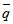

柏拉图(10)〈古时候最伟大的哲学和数学导师〉江铭辉 五梦网
(十)引入归纳法和反证法：
(1) 归纳法与数学归纳法：
归纳法是根据许多试验或观测的数据推理得出一般的结论。例如：方程式2x－y＋3＝0，x＋2y＋4＝0，7x＋8y＋3＝0……等等，它们在直角坐标系中皆为直线，我们依据此现象推论所有如ax＋by＋c＝0都是直线。用归纳法得出的结论可能是正确的，也可能是错误的。
例如，我们看到连续5天出太阳，就预测明天仍然出太阳，但实际上，可能出太阳。
(2) 反证法
反证法是一种重要的证明方法，它不直接证明问题，而是先假设问题“否定的结论”成立，再证明这个“否定的结论”与已知的定理或命题的条件互相矛盾，如此可推论命题成立。换言之，要证明"若P则q"的命题，我们先假设命题的已知条件P及结论的否定
为真，然后从P和 中，推出P和 同时成立时，它们会有矛盾结果，如此可证明“若P则q”的命题成立。
例如：设a1, a2……a8都是正数，且
a1＋a2＋……＋a8＝20……(1)
a1×a2×a3……×a8＝12……(2)
求证：a1,a2……,a8中至少有一个数小于1。
证明：假定a1, a2……a8都不小于1，即ai≧1，（i＝1,2……8）
则可设 ， （i＝1, …8）……(3)
由(1), (3)式得
b1+b2+……+b8 =20-8=12
又由(2)式知：
a1×a2×……a8＝(1＋b1)(1＋b2)＋……(1＋b8)
≧1＋b1＋b2＋……＋b8＝13……(4)
显然(4)式与已知条件(2)相矛盾。因此，a1，a2，……a8中至少有一个数小于1。
最早使用归纳法和反证法的是柏拉图及与他同时代毕达哥拉斯学派的希波克拉底斯（Hippocrates），柏拉图学派的弟子欧几里德（Euclid）及尤多克萨斯（Eudoxus of Cnidus）都是使用“反证法”的顶尖高手。事实上欧几里德的〈几何原本〉著作中便常见到反证法。
(十一)柏拉图正多面体
正多面体共有五种统称为柏拉图正多面体，它们虽然不是柏拉图发现的，但是却由柏拉图首先提出来的。前三种属于毕达哥拉斯学派发现的，后两种，即正八面体及正十二面体是他的学派成员〈泰特托斯〉（Theaetetus）发现的。柏拉图对于五种正多面体作了描述。他说：四面体、八面体、二十面体及六面体分别构成火、土、气、水四种基本元素，而正十二面体则是构成天上物质的精英（如图8）。

图8：柏拉图首先对五种正多面体作了描述，并将这五种多面体与火、地、气、水、宇宙联系在一起
这个思想，后来被大天文学家克卜勒（J. Kepler）应用在行星绕太阳的规道。1596年，年仅25岁的克卜勒发表了〈宇宙的神秘〉一书，该书构想十分奇特，书中提出一种看法。
他巧妙将5种正多面体配合6个行星（当时仅知道五大行星和地球），将这6个行星的轨道所在的球面正好顺次“外接和内切”这5种正多面体，即任意两相邻行星之间都存在着一种正多面体，其外接球代表外面那颗行星的轨道大小，而其内切球代表里面那颗行星的轨道大小（图 9）。他认为它们之间的关系是：水星〈正八面体〉金星〈正二十面体〉地球〈正十二面体〉火星〈正四面体〉木星〈正立方体〉土星。
经计算后，克卜勒设想的这些外接球和内切球的半径之比确实与各行星到太阳的距离比符合得很好。克卜勒认为他已找到了行星距离规律的金钥匙。
〈宇宙的神秘〉出版后，克卜勒把它寄赠给当时许多有名的天文学家，如伽利略（Galileo Galilei），弟谷（Tycho Brahe）等人，弟谷读了此书后，赞赏克卜勒用正多面体来阐明行星距离关系的努力是一种聪明又能自圆其说的奇想。尽管他本人并不同意这一见解，但却很欣赏克卜勒的才华。后来克卜勒成为弟谷的得意助手，弟谷也将他毕生观察天文的资料遗留给他，使他发现了行星运动三大定律。

图9：克卜勒用5种正多面体的外接球与内切球来描述行星到太阳的距离关系，赢得弟谷的赞赏。